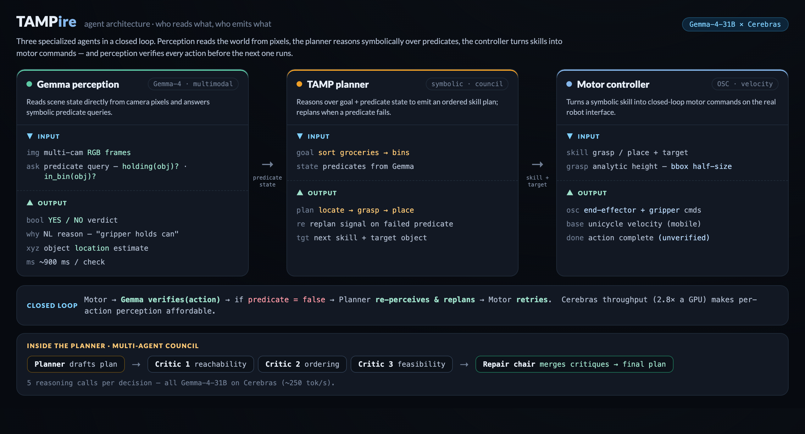

A multi-agent, zero-shot robotics planner that controls a robot straight from pixels — it sees, plans, and recovers from its own failures.
60-second demo — closed-loop recovery, long-horizon sorting, and a Cerebras-vs-GPU speed race.
Real robots fail constantly. The only way to catch a failure is to look after every action — but that's impossible if perception is slow. TAMPire makes perception fast enough to verify each step, so the robot can notice a missed grasp from its own camera, replan, and recover — all zero-shot, with no task-specific training or teleoperation.
Reads scene state directly from camera pixels and answers symbolic predicate queries.
A planner drafts a plan; three critics check reachability, ordering & feasibility; a repair chair merges them.
Turns a symbolic skill into closed-loop motor commands on the real robot interface.

Live multi-agent dashboards: perception (green), planner + goals (amber), motor controller (blue), and the message bus between them.
Gemma-4-31B reads predicates — holding(obj), in(obj, bin) — directly from RoboCasa camera images, no perception pipeline to train.
A council of a planner and three independent critics catches infeasible plans before the robot ever moves, then repairs them.
Cerebras serves Gemma at ~2.8× a GPU's throughput, so re-checking perception after each action — the key to recovery — stays cheap.
Real operational-space control in simulation, reaching RoboCasa-native task success on recovery, sorting, and long-horizon stacking.
A hackathon prototype. The recovery demo induces a first-attempt grasp failure to showcase the closed loop; scripted grasping is per-run stochastic; the speed comparison reports throughput on the same model. Code & details on GitHub.